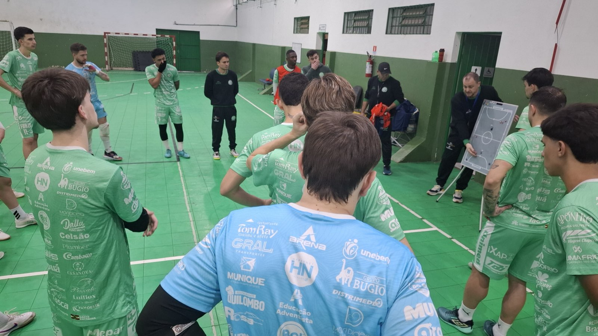

A Prefeitura de Chapecó/Chapecoense/Unochapecó joga neste domingo (14/6) com um objetivo claro: reencontrar o caminho das vitórias e colar na parte de cima da tabela. O Verdão das Quadras enfrenta a Xaxiense/Arvoredo, às 16h, no Centro Integrado de Cultura e Lazer de Arvoredo, a 20 km de Chapecó. O confronto é válido pela quinta rodada da primeira fase do grupo A da Copa Santa Catarina de Futsal.
Atualmente, a Chape Futsal soma três pontos conquistados em duas partidas disputadas. Uma vitória neste fim de semana é fundamental para o clube retornar ao G4, a zona de classificação que garante vaga para a próxima etapa. O regulamento do torneio prevê a disputa em duas chaves com sete equipes cada. Após turno único dentro dos grupos, os quatro melhores de cada lado avançam para o mata-mata.

O elenco verde-branco sabe da necessidade de reação. “Importante voltar a competir, isso sempre foi a marca do nosso time. A gente sempre foi muito intenso, mas se perdeu um pouquinho nos últimos três jogos. Sabemos, temos total consciência que não fizemos três bons jogos. Estamos vindo de dois resultados negativos. A gente tem que voltar a vencer. Estamos se dedicando muito, trabalhando bem forte. É colocar em prática no domingo e conseguir esses três pontos”, disse o goleiro Ale Falcone.
“Fizemos uma semana boa de trabalho, muito intensa e produtiva. Recuperamos os atletas que não estavam aptos a jogar, isso fortalece o elenco. Organizamos algumas coisas relacionadas à nossa identidade de trabalho que perdemos um pouco nos dois últimos jogos. Estamos prontos para domingo. Sabemos da importância e da dificuldade que vai ser o jogo fora de casa, mas tenho certeza que a equipe vai estar pronta para buscar esses três pontos”, disse o técnico Leonardo Schroeder.
Ingressos
Para o torcedor que deseja acompanhar o duelo regional no ginásio, o jogo terá um importante caráter solidário. O ingresso custará apenas um quilo de alimento não perecível, em uma ação social promovida pela Xaxiense/Arvoredo. Todas as doações arrecadadas pelo público serão repassadas diretamente para entidades assistenciais.
Crédito das fotos: Chape Futsal